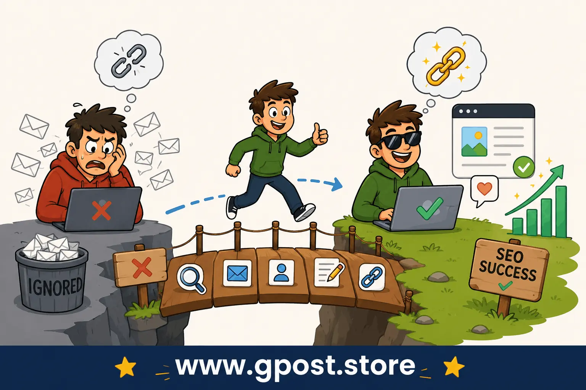

Common guest posting outreach mistakes for beginners – Avoid These SEO Errors in 2026
Common guest posting outreach mistakes for beginners can silently destroy your backlink strategy, reduce your outreach reply rate, and waste hours of effort. Many beginners think guest blogging is only about sending emails and getting links, but successful outreach requires personalization, relevance, trust, and SEO strategy.
In 2026, Google values quality backlinks, topical relevance, and authentic relationships more than ever before. If your outreach feels spammy or low effort, most website owners will ignore your emails instantly. Worse, poor outreach habits can damage your domain reputation and reduce future opportunities.
This guide explains the most important beginner guest posting mistakes, why they happen, how they hurt SEO, and what you should do instead. You will also learn practical outreach methods, advanced SEO insights, and real-world guest blogging strategies used by experienced outreach specialists.

Common outreach mistakes can reduce backlinks, authority, and reply rates.
What Is Common guest posting outreach mistakes for beginners?
Common guest posting outreach mistakes for beginners refers to the errors new bloggers, SEO professionals, and marketers make while contacting websites for guest blogging opportunities.
These mistakes usually include:
- Sending generic outreach emails
- Targeting irrelevant websites
- Using spammy anchor text
- Ignoring personalization
- Focusing only on domain authority
- Sending mass outreach without research
Many beginners believe quantity matters more than quality. However, Google's modern ranking systems reward relevance, trust, topical authority, and natural backlink profiles.
Guest blogging still works in 2026, but only when done strategically and ethically. Businesses investing in High Authority Guest Posts often achieve stronger long-term SEO stability compared to low-quality mass outreach campaigns.
Why Guest Posting Outreach Matters for SEO
Guest posting remains one of the most effective white-hat SEO strategies for improving visibility, building authority, and generating backlinks.
1. Improves Search Rankings
High-quality backlinks from relevant websites help search engines understand your website's authority and trustworthiness.
2. Builds Topical Authority
Publishing content on niche-related websites strengthens your topical relevance in Google's eyes.
3. Generates Referral Traffic
Good guest posts can drive highly targeted visitors to your website.
4. Expands Brand Visibility
Guest blogging introduces your expertise to new audiences.
5. Creates Networking Opportunities
Strong outreach relationships can lead to collaborations, niche edits, partnerships, and recurring publishing opportunities.
 Guest blogging improves SEO, authority, traffic, and brand recognition.
Guest blogging improves SEO, authority, traffic, and brand recognition.
Types of Guest Posting Opportunities
Free Guest Posting
Some blogs accept quality content without charging fees. These websites usually care more about expertise and audience value.
Paid Guest Posting
Many websites charge publishing fees. However, paying for links blindly can become risky if the site exists only for selling backlinks.
Niche-Specific Guest Blogging
Niche relevance is extremely important. A backlink from a smaller relevant website often performs better than an irrelevant high-authority site.
Authority Publications
High-traffic industry blogs can provide strong referral traffic and trust signals.
How to Find Guest Posting Opportunities
Use Google Search Operators
Search operators help identify websites accepting guest posts.
- "write for us" + your niche
- "guest post guidelines" + SEO
- "submit guest post" + marketing
- "become a contributor" + technology
Analyze Competitor Backlinks
SEO tools like Ahrefs or Semrush can reveal where competitors are getting backlinks. Many SEO professionals also use Competitor Backlink Spying Strategy techniques to uncover hidden outreach opportunities and link sources.
Use Social Media
Twitter, LinkedIn, and Facebook groups often share guest blogging opportunities.
Network with Bloggers
Building relationships improves outreach success rates significantly.
 Google search operators are useful for finding guest blogging opportunities.
Google search operators are useful for finding guest blogging opportunities.
Step-by-Step Guest Posting Strategy
Step 1: Research Relevant Websites
Never target random websites. Analyze:
- Domain authority
- Organic traffic
- Niche relevance
- Content quality
- Outbound link quality
Step 2: Personalize Outreach Emails
Personalization dramatically improves reply rates.
Good outreach includes:
- Using the editor's name
- Mentioning recent articles
- Suggesting relevant topics
- Showing expertise
Learning How to Pitch Bloggers Effectively can significantly improve outreach engagement and guest post acceptance rates.
Step 3: Create High-Quality Content
Your article should provide real value instead of being written only for backlinks.
Step 4: Use Natural Anchor Text
Over-optimized anchor text is risky and unnatural.
Step 5: Build Long-Term Relationships
Successful outreach is relationship-driven, not transaction-driven.
guest posting mistakes that reduce reply rate
One of the biggest frustrations beginners face is getting ignored by website owners.
These are the most common reasons outreach emails fail:
- Generic templates
- No personalization
- Spammy subject lines
- Poor grammar
- Irrelevant outreach
- Overly promotional content
- Demanding backlinks aggressively
Bad Outreach Example
"Hi admin, I want guest post on your website. Please reply fast."
Better Outreach Example
"Hi Sarah, I recently read your article about technical SEO and found your insights on crawl budget optimization very useful. I'd love to contribute a practical guest post about outreach strategies for beginner bloggers."
beginner guest posting mistakes
1. Focusing Only on DA
Many beginners chase high DA websites without checking relevance.
A niche-relevant backlink usually performs better than an unrelated authority link.
2. Ignoring Traffic Quality
Some websites have fake traffic or manipulated metrics.
3. Using AI-Generated Spam Content
Low-quality AI content can damage credibility and reduce publishing opportunities.
4. Sending Bulk Outreach
Mass emailing often destroys personalization and trust.
5. Expecting Instant Results
Guest blogging is a long-term SEO strategy.
guest post outreach mistakes to avoid
Ignoring Topical Relevance
Relevance matters more after recent Google updates.
Over-Optimized Anchor Text
Exact match anchor text abuse can trigger algorithmic filters.
Publishing on Link Farms
Some websites exist only to sell backlinks.
Low-Quality Content
Weak content reduces trust and future outreach opportunities.
Not Following Guidelines
Editors often reject submissions that ignore publishing rules.
common blogger outreach mistakes
Outreach is not only about links. It is about communication psychology.
Being Too Aggressive
Demanding replies quickly often backfires.
Not Building Relationships
Long-term relationships create better opportunities.
Ignoring Social Signals
Engaging with bloggers on social media improves trust.
Using Misleading Subject Lines
Clickbait outreach emails damage credibility.
Hidden SEO Realities Beginners Usually Never Hear About
Many beginners assume every backlink improves rankings equally. This is false.
Topical Relevance Often Beats Authority
A backlink from a smaller niche-relevant site may outperform a random DA 90 website.
Some High DA Websites Pass Little Value
Many authority websites sell excessive sponsored links, reducing trust.
Google Evaluates Link Context
Contextual placement matters more than sidebar or footer links.
Reply Rates Can Suddenly Drop
Outreach effectiveness changes depending on industry saturation and seasonal trends. Understanding Outreach Response Rate Increase Tips can help you stay ahead of declining engagement trends.
Myth vs Reality in Guest Posting SEO
Myth: More Backlinks Always Improve Rankings
Reality: Poor-quality links can hurt SEO performance.
Myth: DA Is Everything
Reality: Relevance and traffic quality matter heavily.
Myth: Automation Solves Outreach
Reality: Excessive automation lowers personalization and trust.
Myth: Guest Posting Is Dead
Reality: Quality guest blogging still works extremely well in 2026.
Modern SEO rewards relevance, quality, and trust over backlink quantity.
Advanced Guest Posting Strategy for Experienced SEO Professionals
Anchor Text Distribution
Experienced SEOs diversify anchor text naturally.
- Branded anchors
- Naked URLs
- Generic anchors
- Partial match anchors
Link Velocity Management
Sudden unnatural backlink spikes can appear suspicious.
Semantic Relevance Scoring
Google increasingly understands topical relationships between websites.
Entity SEO
Mentions of brands, authors, and entities improve trust signals.
How Google Updates Changed Guest Posting
Recent Google updates heavily target manipulative link-building tactics.
Helpful Content System
Google rewards genuinely useful content.
Spam Link Updates
Spammy guest posting networks now carry more risk. Learning Is Guest Posting White Hat or Grey Hat SEO helps you stay compliant with Google's evolving guidelines.
E-E-A-T Signals
Experience, expertise, authority, and trust matter more than ever.
Pro SEO Tips for Better Outreach Results
Focus on Niche Relevance
Relevant links outperform random authority links.
Improve Email Deliverability
Warm up domains and avoid spam triggers.
Use Internal Linking Properly
Internal links improve topical structure and content discovery.
Prioritize Quality Over Quantity
Ten high-quality backlinks outperform hundreds of weak links.
Is Guest Posting Still Worth It in 2026?
Yes, but only when done strategically.
Modern guest blogging is less about mass backlink building and more about:
- Authority building
- Relationship development
- Topical relevance
- Referral traffic
- Brand trust
Low-quality guest posting is dying, but expert-level outreach remains powerful. Partnering with a reliable Guest Post & Blogger Outreach Service can help you scale your campaigns while maintaining quality standards.
When You Should Avoid Guest Posting
- When targeting irrelevant websites
- When relying only on paid links
- When using spam automation
- When publishing low-quality content
- When ignoring Google guidelines
Frequently Asked Questions
What are the most common guest posting outreach mistakes for beginners?
Beginners often send generic outreach emails, ignore blog guidelines, target irrelevant websites, and use weak content ideas, which reduces guest posting success and backlink quality.
What is guest post outreach in SEO?
Guest post outreach is the process of contacting relevant websites to publish content and earn quality backlinks that improve SEO rankings, authority, and organic traffic.
Why do guest posting outreach emails get ignored?
Most outreach emails fail because they lack personalization, provide little value, target irrelevant blogs, or appear spammy to editors and website owners.
Guest posting vs niche edits: which is better for SEO?
Guest posting builds stronger topical authority through fresh content, while niche edits add links to existing pages. Reviewing a detailed Guest Posting vs Niche Edits comparison can help you decide which strategy fits your SEO goals best.
How can beginners improve guest post outreach success?
Beginners can improve outreach success by targeting niche-relevant blogs, personalizing emails, following editorial guidelines, and offering high-quality article topics.
How does personalized outreach improve guest posting SEO?
Personalized outreach improves reply rates and trust because editors prefer customized pitches that match their audience, content style, and website niche.
Can bad guest posting practices hurt Google rankings?
Yes, spammy backlinks, keyword stuffing, low-quality websites, and duplicate content can negatively affect SEO performance and trigger Google spam signals.
What tools help manage guest posting outreach campaigns?
SEO professionals use Ahrefs, Semrush, Google Sheets, and outreach tools to find websites, track emails, monitor backlinks, and manage outreach campaigns efficiently.
How do quality backlinks improve guest posting authority?
High-quality backlinks improve domain authority, organic rankings, referral traffic, and brand trust, making guest posting an effective long-term SEO strategy. Understanding How Link Building Affects Domain Authority gives you a clearer picture of the long-term impact of your efforts.
Will guest posting still work after future Google updates?
Yes, guest posting remains effective when focused on quality content, relevant backlinks, natural outreach, and real value instead of spammy link-building tactics.
Conclusion
Common guest posting outreach mistakes for beginners can significantly reduce your SEO success if ignored. Modern outreach requires personalization, relevance, relationship building, and quality content. Instead of chasing large numbers of backlinks, focus on trustworthy websites, useful content, and long-term networking.
The most successful SEO professionals understand that guest blogging is not only about links. It is about authority, trust, brand growth, and topical relevance. By avoiding spammy tactics and focusing on value-first outreach, you can improve reply rates, build stronger backlinks, and create a sustainable SEO strategy for long-term growth.
If you want to learn more advanced outreach strategies, backlink methods, and guest blogging techniques, visit
guest posting outreach services.